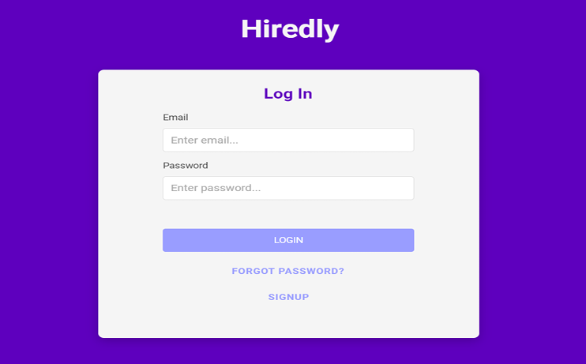
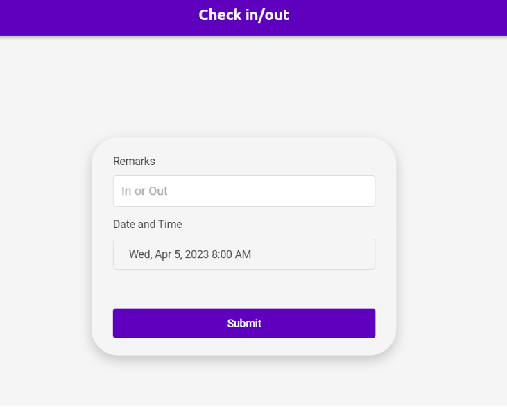
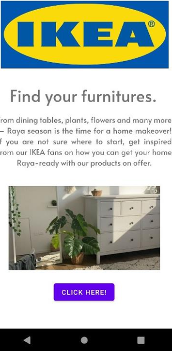
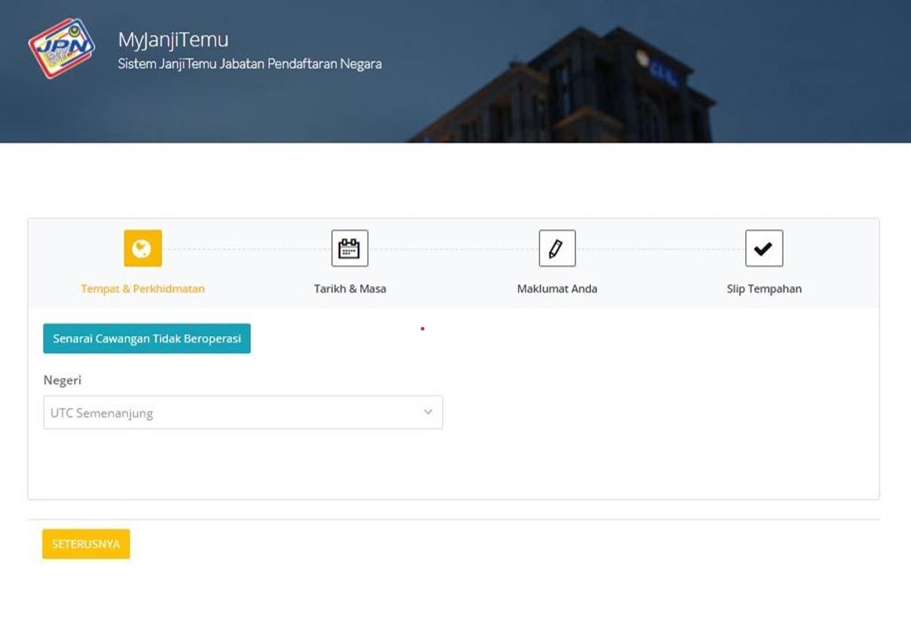
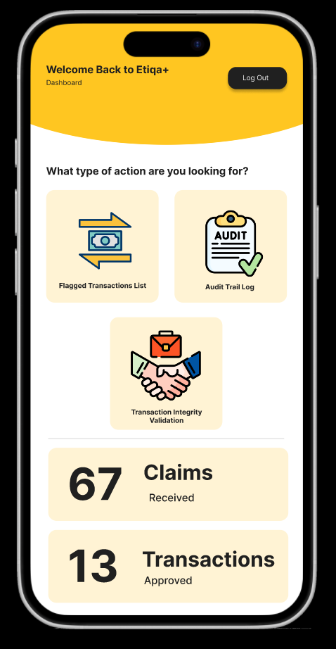

Attendance Web Management System
January 2023 – April 2023 | Leader
Created a website designed to track and manage attendance records for a hybrid recruitment company. The project began with SWOT and TOWS analysis, followed by a context diagram and Level 0 diagram to better understand system flow. Adalo software was used to design the UI and database for employee clock-in and clock-out functionality.


Ikea Augmented Reality App
January 2023 – April 2023

Built an Android AR application that allows users to browse IKEA products and visualize them live using their phone camera. Developed using Java in Android Studio.
JPN Appointment System
January 2023 – April 2023

Developed a system for customers, staff, and administrators to manage appointments. Implemented CRUD operations and built a database using MySQL and PHPMyAdmin via UniServer. Technologies used include PHP, HTML, CSS, JavaScript, and SQL.
Etiqa eMoney Platform
October 2025 – January 2026 | Leader

Designed and developed system workflows for transaction processing, including AML/RMiT validation and failed transfer handling. Analyzed and revised Software Requirements Specifications (SRS), and modeled use cases, alternative flows, and exception handling using Figma and Visual Paradigm.